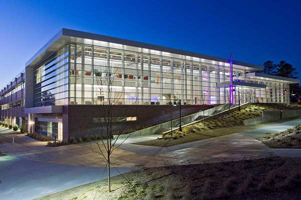

Facilities & Labs
Cleanroom

The cleanroom is designed for advanced research in microelectronics, semiconductor manufacturing, and materials science. It provides students and faculty with access to specialized equipment in a controlled environment.
Advanced Computing Laboratory
This lab supports high-performance computing, artificial intelligence, software development, and data analysis projects. Students gain valuable experience using modern computing technologies.
Cybersecurity Laboratory
The cybersecurity lab allows students to develop practical skills in network security, ethical hacking, digital forensics, and cyber defense.
High-Bay Makerspace
The makerspace provides room for large-scale engineering projects, prototyping, fabrication, and collaborative design activities.